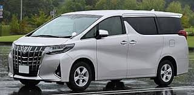
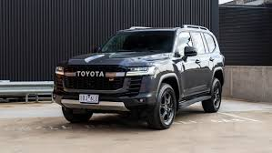
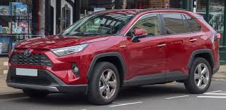

History of Toyota
Toyota is a Japanese multinational automotive manufacturer headquartered in Toyota City, Aichi, Japan. It was founded by Kiichiro Toyoda and incorporated on August 28, 1937. Toyota is the largest automobile manufacturer in the world, producing about 10 million vehicles per year.
Model Category
- Sedan
- MPV
- SUV
- Crossover
- Pickup Truck
A sedan (American English) or saloon (British English) is a passenger car in a three-box configuration with separate compartments for an engine, passengers, and cargo. Variations of the sedan style include the close-coupled sedan, club sedan, convertible sedan, fastback sedan, hardtop sedan, notchback sedan, and sedanet.
An MPV, or Multi-Purpose Vehicle, is a car designed for maximum passenger and cargo space, prioritizing comfort and practicality over performance
A sports utility vehicle (SUV) combines elements of road-going passenger vehicles with features from off-road vehicles, such as raised ground clearance and four-wheel drive. There is no common definition of an SUV, and usage varies between countries. Some definitions claim that an SUV must be built on a light-truck chassis. However, a broader definition considers any vehicle with off-road design features as an SUV. In some countries — such as the United States — SUVs have been classified as "light trucks", resulting in more lenient regulations compared to passenger vehicles.
A crossover SUV— also called a crossover or CUV— is a type of sports utility vehicle (SUV) that uses a unibody construction. Crossovers are often based on a platform shared with a passenger car, as a result, they typically have better comfort and fuel economy, but less off-road capability (many crossovers are sold without all-wheel drive) than truck-based SUVs, though more so than passenger four wheels.
Pickup trucks, called utes in Australia and New Zealand, are common in North America and some regions of Latin America, Asia, and Africa, but not so in Europe, where this size of commercial vehicle is most often made as vans.
List of Cars
- Toyota Camry
- Toyota Alphard 
- Toyota Land Cruiser 
- Toyota RAV4 
- Toyota Hilux

In Japan, the Camry was once exclusive to Toyota Corolla Store retail dealerships. Narrow-body cars also spawned a rebadged sibling in Japan, the Toyota Vista also introduced in 1982 and sold at Toyota Vista Store locations. Diesel fuel versions have previously retailed at Toyota Diesel Store. The Vista Ardeo was a wagon version of the Vista V50.
The vehicle was named after Alphard, the brightest star in the constellation Hydra. Until the third generation, the Alphard wears a special front emblem which depicts the lowercase alpha letter. A prominent design feature of the Alphard is its shield-like grille, which it has had since the launch of the AH30 generation in 2015.
Production of the first generation of the Land Cruiser began in 1951. The Land Cruiser has been produced in convertible, hardtop, station wagon and cab chassis body styles. The Land Cruiser's reliability and longevity have led to huge popularity, especially in Australia, where it is the best-selling body-on-frame, four-wheel drive vehicle. Toyota also extensively tests the Land Cruiser in the Australian outback – considered to be one of the toughest operating environments in both temperature and terrain. In Japan, the Land Cruiser was once exclusive to Toyota Japanese dealerships called Toyota Store.
The Toyota RAV4 is a compact crossover SUV produced by the Japanese automobile manufacturer Toyota. It is known for starting the wave of compact crossovers.

The Toyota Hilux, stylised as HiLux and historically as Hi-Lux, is a series of pickup trucks produced and marketed by the Japanese automobile manufacturer Toyota. The majority of these vehicles are sold as a pickup truck or cab chassis, although they could be configured in a variety of body styles.